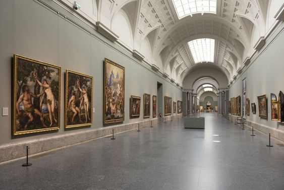
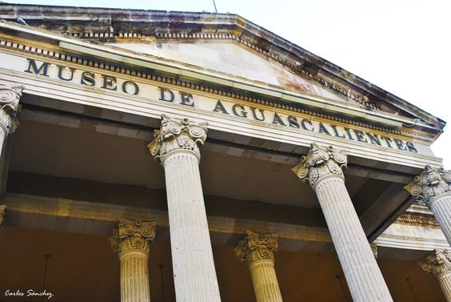
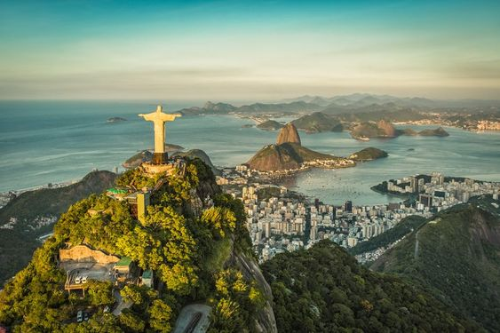
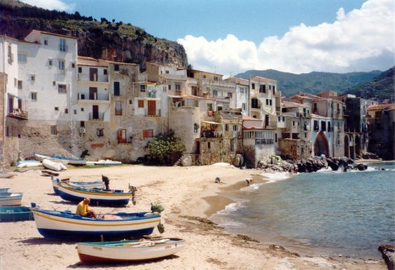
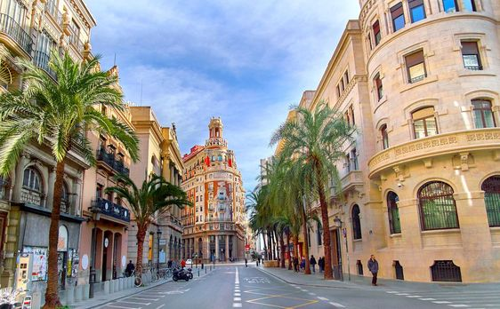

Alvaro Reynoso ObregonAnimation StudentLa Calle de las Sirenas, 4108
Touristic Destinations
Museo del Prado

Description: Prado Museum, art museum in Madrid, housing the world's richest and most
comprehensive collection of Spanish painting, as well as masterpieces of other schools of European
painting, especially Italian and Flemish art.
Province/State: Madrid
Country: Spain
Population: 3.223 million people
Latitude and longitude: 40.4167° N, 3.7033° W
Flag of the country:
Museo de Aguascalientes

Description: Construído en 1903 y reconstruido por José Refugio Reyes; de estilo neoclásico.
El interior consta de dos patios; en el primero, columnas tritóstilas sobre bases rectangulares, arcos rebajados
con clave labrada; el segundo, obra de José Refugio Reyes Rivas, tiene bellos jardines y fuentes de cantera al centro.
Province/State: Aguascalientes
Country: Mexico
Population: 1.313 million people
Latitude and longitude: 21.8853° N, 102.2916° W
Flag of the country:
Rio de Janeiro

Description: Rio de Janeiro is one of the most visited cities in the Southern
Hemisphere and is known for its natural settings, carnival, samba, bossa nova, and balneario beaches
such as Barra da Tijuca, Copacabana, Ipanema, and Leblon.
Country: Brazil
Population: 6.748 million people
Latitude and longitude: 22.9068° S, 43.1729° W
Flag of the country:
Sicily

Description: Sicily, island, southern Italy, the largest and one of the most densely
populated islands in the Mediterranean Sea. Together with the Egadi, Lipari, Pelagie, and Panteleria islands,
Sicily forms an autonomous region of Italy. It lies about 100 miles (160 km) northeast of Tunisia
(northern Africa).
Province/State: Sicily
Country: Italy
Population: 5 million people
Latitude and longitude: 37.3979° N, 14.6588° E
Flag of the country:
Valencia

Description: Valencia is a vibrant, cosmopolitan city on the
Mediterranean coast. Once the capital of its own kingdom, it is now a regional capital and Spain's third
largest city. Surrounded by orange orchards and sandy beaches, the city enjoys year-round sunshine and
has become a popular conference centre.
 HOME
HOME  MY FAVOURITE SPOTS
MY FAVOURITE SPOTS